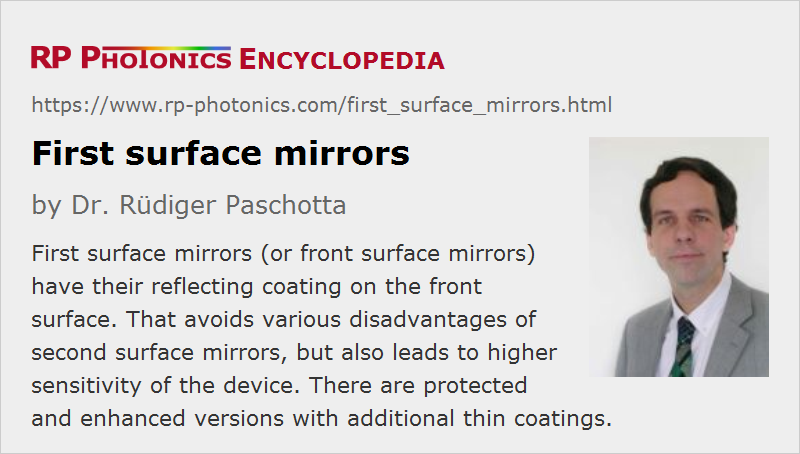

First Surface Mirrors
Acronym: FS mirrors
Definition: metal-coated mirrors reality metallic mineral coating is on the front surface of the mirror substrate
Alternative term: front surface mirrors
More general term: mirrors
German: Oberflächenspiegel
How to cite the article; suggest additional literature
Author: Dr. Rüdiger Paschotta
Common types of metal-coated mirrors, e.g. silver mirrors as are widely used in households, have their reflecting metal coating on the back side of a glass substrate (typically with an additional protection layer behind). In contrast to that approach, a first surface mirror, also called front surface mirror, has the reflecting coating on the front surface. That leads to various advantages over the first explained second surface mirrors, which are explained in the following section.
Ordinary dielectric mirrors can in principle also be considered as first surface mirrors, but the term is usually applied only to a metal-coated mirrors. These can be made with different types of substrates – not only with glass, but e.g. also with metallic substrates, e.g. with rectangular or circular front surfaces, and with flat or curved surfaces.
Consequences of Front Reflection
For a first surface mirror, the reflected light does not need to propagate through the mirror substrate. That has the following consequences for its performance, when comparing with a second surface mirror:
- The mirror substrate cannot reduce the reflectivity by absorption in certain wavelength regions. Therefore, front surface mirrors are preferable in situations where area wide low-loss reflection bands (e.g. in the infrared) are required.
- Wavefront distortions due to optical inhomogeneities of the substrate cannot occur. The substrate only needs to be sufficiently flat.
- For non-normal incidence of light, one avoids the transverse beam offset due to propagation in the glass substrate. In addition, in imaging applications one does not obtain ghost images due to the additional (weaker) front surface reflection of a second surface mirror.
- For normal incidence, strong chromatic dispersion based on interference of contributions from front and back surface reflections is avoided. (For details of such effects, see the article on Gires–Tournois interferometers.)
For many applications in optics, the mentioned advantages are vital; some examples:
- Laser mirrors (e.g. for CO2 lasers) generally need to be first surface mirrors.
- Imaging applications generally need them for avoiding ghost images.
- Broadband mirrors for spectroscopy are also usually made as front surface mirrors.
Therefore, first surface mirrors are quite common in professional optics. However, compared with back surface mirrors, they have the important disadvantage of being substantially more sensitive. The front surface may be touched, and a metal coating on the front surface is substantially more sensitive than a bare glass surface. For example, fingerprints can easily cause oxidation of the metal, and it may not be possible to clean such mirrors while retaining the full optical quality. Also, moisture or aggressive gases may cause oxidation of the mirror coating.
Protected and Enhanced Mirrors
In order to mitigate the sensitivity problem, and partly also for further improving the reflectivity, first surface mirrors are often made as protected or enhanced mirrors. This means that the metal layer is covered with a thin layer or multiple layers of a dielectric material such as amorphous SiO2 (silica) or Si3N4 (silicon nitride), which protects the coating particularly against oxidation (tarnish) and to a lower extent against scratches.
Strictly speaking, the main reflection will no longer occur at the front surface, when there is a dielectric coating on the metal layer. That coating, however, is very thin, and therefore often not considered as providing an additional surface.
For enhancing the reflectivity, one often uses multilayer dielectric coatings; this leads to enhanced metal coatings e.g. for enhanced silver mirrors. One effectively combines the large reflection bandwidth of a metallic mirror with the higher reflectivity and damage threshold of a dielectric mirror. In some cases, the coating is also optimized concerning chromatic dispersion – mostly for use in ultrafast lasers.
A potential disadvantage of additional coatings arises from their deviating thermal expansion coefficients. This can cause problems particularly when mirrors need to be operated in wide temperature regions. That is the case for optical telescopes, for example.
Examples
Here are some examples for protected and enhanced metal-coated mirrors:
- Protected aluminum mirrors are relatively cheap mirrors for the visible and near-IR spectral region. They have a protective coating, e.g. made of silicon monoxide, but not particularly enhanced optical properties.
- There are UV-enhanced aluminum mirrors with particularly high reflectivity for ultraviolet light down to ≈250 nm. The enhancement of reflectivity, achieved with a dielectric multilayer coating, is typically obtained in a wide spectral range, i.e., also in the visible region. Besides the optical properties, the durability is also enhanced.
- Similarly, IR-enhanced gold mirrors are available, which have a high reflectivity in the near or even mid infrared, e.g. up to 20 μm.
- Ultrafast-enhanced silver mirrors have a very high reflectivity and low chromatic dispersion over the whole wavelength band of titanium–sapphire lasers (750–1000 nm). The coating also protects against the tarnishing of the silver, but it is still better to keep such mirrors in a dry environment.
It is also possible to apply laser line coatings, which can enhance the reflectivity at one or more specific laser lines.
Suppliers
The RP Photonics Buyer's Guide contains 60 suppliers for first surface mirrors. Among them:
Questions and Comments from Users
Here you can submit questions and comments. As far as they get accepted by the author, they will appear above this paragraph together with the author’s answer. The author will decide on acceptance based on certain criteria. Essentially, the issue must be of sufficiently broad interest.
Please do not enter personal data here; we would otherwise delete it soon. (See also our privacy declaration.) If you wish to receive personal feedback or consultancy from the author, please contact him e.g. via e-mail.
By submitting the information, you give your consent to the potential publication of your inputs on our website according to our rules. (If you later retract your consent, we will delete those inputs.) As your inputs are first reviewed by the author, they may be published with some delay.
See also: mirrors, metal-coated mirrors, infrared optics
and other articles in the category general optics
|  |
If you like this page, please share the link with your friends and colleagues, e.g. via social media: 


These sharing buttons are implemented in a privacy-friendly way! |
2020-04-01
There are many opinions in the amateur astronomy community about which makes the better diagonal mirror. The 3 main types in question:
1) front surface 'enhanced' aluminized with a protective layer(s) of dielectric to protect and aid in greater reflectivity of about 96%
2) dielectric with numerous layers to achieve about 99% reflectivity (no metal)
3) standard or 'enhanced, 'silvered' prism
We in the amateur community are looking for a diagonal for use in mainly two types of telescopes, refractors and Schmidt Cassigrains. We want a high reflectance and more importantly the least amount of scatter, as to provide the clearest image as provided by the primary optic and respective eyepiece.
Answer from the author:
I don't have particular expertise on mirrors for astronomy, but I suppose that the first type of mirror – metal coating plus some dielectric layers – should work best. Pure dielectric mirrors are more limited in terms of spectral and angular range.